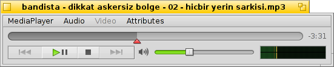
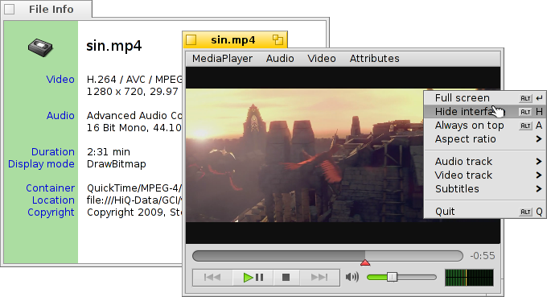
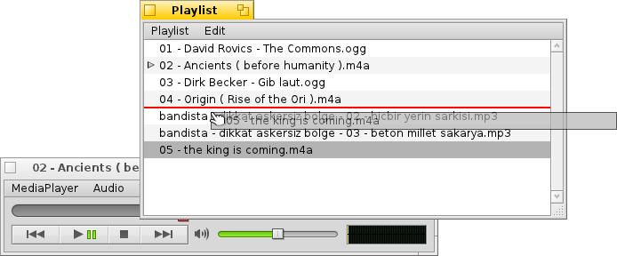
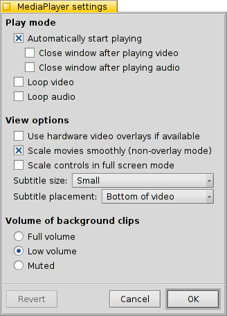

| Índice |
| Reproducción de audio y video Listas de reproducción Calificación Configuración Controles de teclado |
 MediaPlayer
MediaPlayer
| Barra de escritorio: | ||
| Ubicación: | /boot/system/apps/MediaPlayer | |
| Configuraciones: | ~/config/settings/MediaPlayer |
MediaPlayer es el reproductor predeterminado para todos los archivos de audio y video. Gracias a su motor ffmpeg, soporta una gran cantidad de formatos ampliamente usados. Su interfaz sencilla tiene todos los controles que esperaría tener:
El deslizador de la barra de progreso le permite saltar rapidamente a una posición, y si descansa el puntero sobre él, mostrará el tiempo actual y restante del clip. Si hace clic en la visualización a la derecha, alternando entre el tiempo total, el tiempo actual y el tiempo restante.
Debajo de eso encontrará los controles habituales para saltar a la pista anterior, reproducir/pausar, detener y saltar a la siguiente pista. Luego se muestra el control de volumen (si le da clic en el símbolo de parlante alterna el modo de silencio) y un medidor VU.
 Reproducción de audio y video
Reproducción de audio y video
Debido a que no hay características especiales para reproducción de audio, mostraremos las caracteristicas generales del uso de videos.
Todos los archivos de medios tienen a su disposición su (ALT I). Muestra información sobre el archivo cargado actualmente, como por ejemplo el tiempo de reproducción o detalles de la pista de audio/video y su codec.
La mayor parte de las ordenes utilizadas desde los menus también están disponibles desde el menú contextual del botón derecho en el área de video. Esto es conveniente en modo de pantalla completa.
Bajo puede encontrar opciones para cambiar el tamaño de la ventana a varios niveles u obligar la relación de aspecto a algunos valores estándar. Si deja la relación de aspecto en las valores predeterminados de esto deberá funcionar mejor para archivos codificados correctamente.
El MediaPlayer soporta subtítulos en formato SRT. Para que estos se muestren bajo el menú de , el nombre de sus archivos debe ser idéntico al nombre del archivo del video, con el nombre del idioma como sufijo y luego ".srt" en lugar de la extensión del archivo del video: Por ejemplo:
MyMovie.avi MyMovie.Deutsch.srt MyMovie.English.srt MyMovie.Français.srt
Pistas multiples de audio, que son principalmente utilizadas para diferentes idiomas dentro de un sólo archivo de video, se pueden acceder desde el submenú . El submenú ofrece lo mismo cuando existen diferentes streams de video.
Puede alternar entre modalidad de (ALT ENTER o F o con un doble clic izquierdo ), esconder los controles y bordes de la ventana de MediaPlayer con (ALT H o un doble clic derecho) o puede tener su ventana (ALT A).
Listas de reproducción
(ALT P) abre una ventana con los archivos en espera para reproducción. Si hace doble clic en cualquier entrada de la lista, este empezará a reproducir.
Puede añadir más archivos arrastrandolos a la lista y reordenando su posición con el ratón con la función de arrastrar y soltar. Los archivos recién añadidos se insertan en el orden en que fueron seleccionados en una ventana de Tracker. Arrastrarlos y soltarlos con el botón derecho del ratón hará aparecer un menú contextual para insertarlos (alfabéticamente).
Desde el menú puede o (SUPR) una de las entradas de la lista o borrar el propio archivo con (ALT T).
Desde luego, puede una lista de reproducción y luego la puede de nuevo, o iniciarla sencillamente haciendo doble clic en su archivo de lista de reproducción.
Calificación

Aquí puede establecer una del archivo multimedia actual entre 1 y 10, o elegir la opción para volver a ponerla como "sin calificar" (= "0").
En Tracker, las calificaciones se muestran en la columna de atributo "Rating" como una serie de estrellas. Las cinco estrellas representan los diez valores posibles, en donde cada etapa equivale a media estrella. Por ejemplo, una calificación de 7 se muestra como 7 / 2 = 3,5 estrellas: ★★★⯪☆.
Pero también puede editar la calificación directamente en Tracker: seleccione el archivo, elija en el menú y presione TAB para trasladarse a la columna "Rating". Entonces puede ingresar el valor numérico nuevo, que se convertirá en una calificación en estrellas al presionar ENTRAR.
Configuración
Hay varias opciones para ajustar el comportamiento de MediaPlayer:
La primera parte, , se explica sola.
Puede iniciar la reproducción automaticamente, cerrar las ventanas al terminar la reproducción, o reproducir en ciclo.
En el menú emergente "Continuar" puede determinar el comportamiento de MediaPlayer al inicio. Puede continuar con la reproducción en el estado que quedó en la última sesión: , , o .
Luego estan las diferentes .
Puede optar por , que reduce el uso del CPU pero sólo funciona para una ventana de video y necesita tener una tarjeta de video soportada.
Puede (cuando no está en modalidad sobrepuesta) que usa un filtrado muy rápido para añadir un suavizado sobre pixeles que de otra forma se verían granulados cuando se aumenta el video o cuando se ve en modalidad de pantalla completa.
Puede si prefiere tener los controles un poco más grandes, quizá para ver la pantalla desde un poco más lejos cuando está en pantalla completa.
Luego se encuentran los ajustes para el y . Estos se pueden mostrar en la parte , lo que los tendrá siempre sobrepuestas a la imagen. O pueden estar en la parte , que le permitiran cambiar el tamaño de la ventana verticalmente y los subtítulos apareceran en cambio en la barra oscura de abajo.
El último ajuste determina el volumen de los clips cuyas ventanas no se muestran activas actualmente. Puede hacer que todas esten funcionando a , a un menos confuso o en .
Controles de teclado
El MediaPlayer ofrece combinaciones de teclado cómodas para controlar la reproducción sin usar el ratón.
| Z | Saltar a pista anterior | |
| X | Reproducir | |
| C | Pausar | |
| V | Detener | |
| B | Saltar a pista siguiente |
Estas teclas están asignadas a las funciones de los botones de control. Estas teclas siempre son las que estan en la parte inferior izquierda del teclado, es decir que funcionan independientemente del teclado que tenga programado. Las teclas mostradas arriba corresponden al mapa de teclado US-estados unidos.
| ← / → | Búsqueda para atrás/adelante | |
| SHIFT ← / → | Saltar atrás/adelante 10 segundos | |
| ALT ← / → | Saltar atrás/adelante 30 segundos | |
| ↓ / ↑ | Reduce/aumenta el volumen | |
| ALT ↓ / ↑ | Salta a la pista siguienta/previa | |
| Barra espaciadora | Alterna entre reproducir y pausa | |
| ALT ENTRAR | Alterna entre modo pantalla completa (tambíen puede hacer doble clic izquierdo en el área del video o presionar F o TAB) | |
| ALT SHIFT 0 / 1 / 2 / 3 | Cambia la relación de aspecto a (la forma en la cual el video fue codificado), (hace ajuste de los pixeles del video a la pantalla en relación 1:1), , |